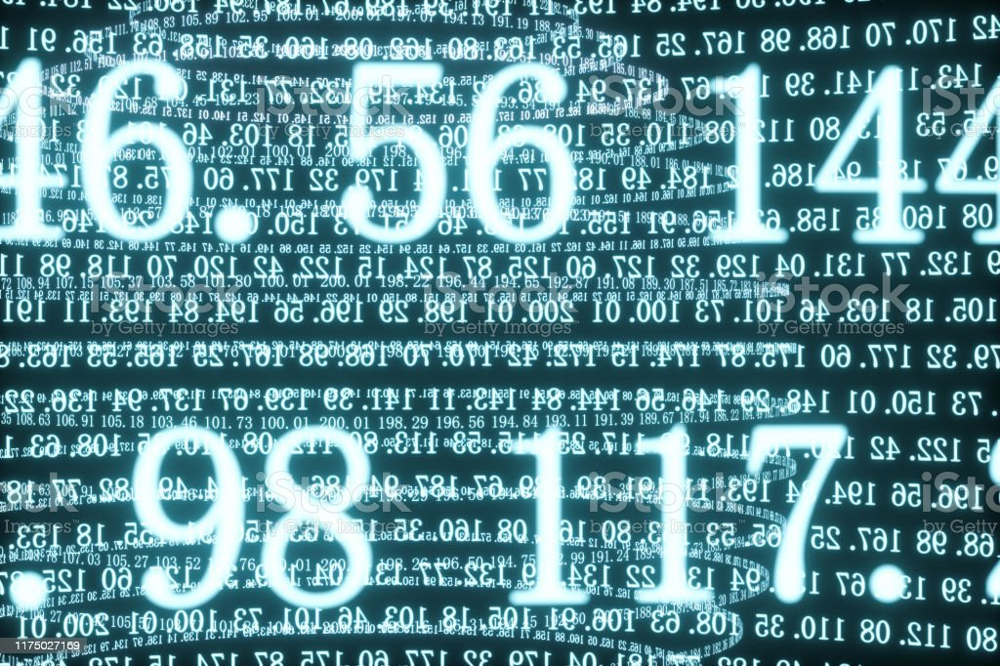

SISTEMA BINÁRIO
Vamos entender como o sistema binário funciona?
O sistema binário utiliza apenas dois tipos de números em sua composição, o 0 (zero) e o 1 (um). Portanto, a sua base é 2.
Representação de um sistema com base binária: 100102
SISTEMA DECIMAL
Agora vamos enteder como funciona o sistema decimal!
O sistema decimal pode ser composto por qualquer número e tem como sua base o número 10 (dez).
Representação de um sistema com base decimal: 17810
SISTEMA OCTAL
Chegou a vez do sistema octal, vamos entender!

O sistema octal possui uma peculiaridade, seus valores só podem ser compostos por números de 0 (zero) a 7 (sete), ou seja, não pode conter os números 8 (oito) e 9 (nove). Este sistema possui 8 (oito) componentes, tendo como esse número a sua base.
Representação de um sistema com base octal: 7528
SISTEMA HEXADECIMAL
Por último vamos entender o sistema hexadecimal!

O sistema hexadecimal possui um total de 16 simbolos, que vão do número 0 (zero) até o número 9 (nove), continuando com a letra A que representa o número 10 (dez) até a letra F que representa o número 16 (dezesseis). Sua base é 16 (dezesseis).
Representação de um sistema hexadecimal: A1716
VAMOS CONVERTER?
Sistema Binário para Decimal
Cada número do sistema binário é representado da seguinte forma em sua conversão para decimal: O número vezes a sua base (no caso 2 por ser binário) elevado a sua posição (n x bp).
Exemplo: Convertendo 10112 para decimal temos: 1 x 23 + 1 x 22 + 1 x 21 + 1 x 20 = 1110
Sistema Decimal para Binário
Nesse tipo de conversão, ao invés de multiplicar pela base nós iremos dividir, e cada resto da divisão representará cada valor binário junto com o resultado da última divisão.
Exemplo: Convertendo 1410 para binário temos: 14/2 = 7, resta 0, 7/2 = 3, resta 1, 3/2 = 1, resta 1. Logo a conversão de 14 em decimais para binário será 11102.
Sistema Octal para Decimal
O método utilizado para converter de octal para decimal é idêntico ao método utilizado pelo sistema binário, mudando apenas sua base para 8 (oito).
Exemplo: Convertendo 7178 para decimal temos: 7 x 82 + 1 x 81 + 7 x 80 = 46310
Sistema Decimal para Octal
Assim como no exemplo passado, esse método também é idêntico ao método utilizado no sistema binário, mudando apenas sua base, no caso 8 (oito).
Exemplo: Convertendo 46310 para octal temos: 463/8 = 57, resta 7, 57/8 = 7, resta 1. Logo sua conversão resultará em 7178
Sistema Hexadecimal para Decimal
Os métodos de conversão para decimal tem em comum o mesmo processo mudando apenas sua base.
Exemplo: Convertendo A1716 para decimal temos: 10 x 162 + 1 x 161 + 7 x 160 = 258310 . Neste exemplo vemos que o simbolo A é representado pelo número 10 (dez), respeitando as regras do sistema octal.
Sistema Decimal para Hexadecimal
Seguindo o mesmo processo de conversão de decimal para os demais sistemas, nesse também temos a divisão, tendo como divisor a base 16.
Exemplo: Convertendo 258310 para hexadecimal temos: 2583/16 = 161, resta 7, 161/16 = 10, resta 1. Logo sua forma em hexadecimal será A1716
Sistema Binário para Hexadecimal
Para converter de binário para hexadecimal a primeira coisa a ser feita é separar as unidades em grupos de 4 (quatro) bits, ou seja, 4 unidades binárias. Cada grupo de 4 bits (binário) representará uma unidade hexadecimal.
Exemplo: Convertendo 11010001011000112 para hexadecimal temos: 1101 = 13, como 13 é representado pelo simbolo D então temos 1101 = D, 0001 = 1, 0110 = 6 e 0011 = 3. Então a conversão em hexadecimal será D16316
Sistema Hexadecimal para Binário
Aqui o processo é reverso ao anterior, cada unidade hexadecimal representará 4 unidades em binário.
Exemplo: Convertendo F2A716 em binário temos: F que vale 15 = 1111, 2 = 0010, A = 1010 e 7 = 011. O resultado desse processo será 11110010101001112 .... Lembrando que o processo de conversão de cada unidade, tanto desse método como do anterior são os mesmos citados anteriormente, multiplicação pela base e divisão pela base respectivamente.
Sistema Binário para Octal
Essa conversão ocorre da mesma forma de hexadecimal para binário com uma única diferença, ao invés de separar as unidades em grupos de 4, serão divididos em grupos de 3.
Exemplo: Convertendo 0110101112 para octal temos: 011 = 3, 010 = 2 e 111 = 7. Logo, sua conversão será 3278 para
Sistema octal para Binário
Seguindo o mesmo caminho da conversão de hexadecimal para binário, pegamos cada valor hexadecimal e convertemos para binário.
Exemplo: Convertendo 3278 pra binário temos: 3 = 011, 2 = 010 e 7 = 111. Sua representação em binário será 0110101112